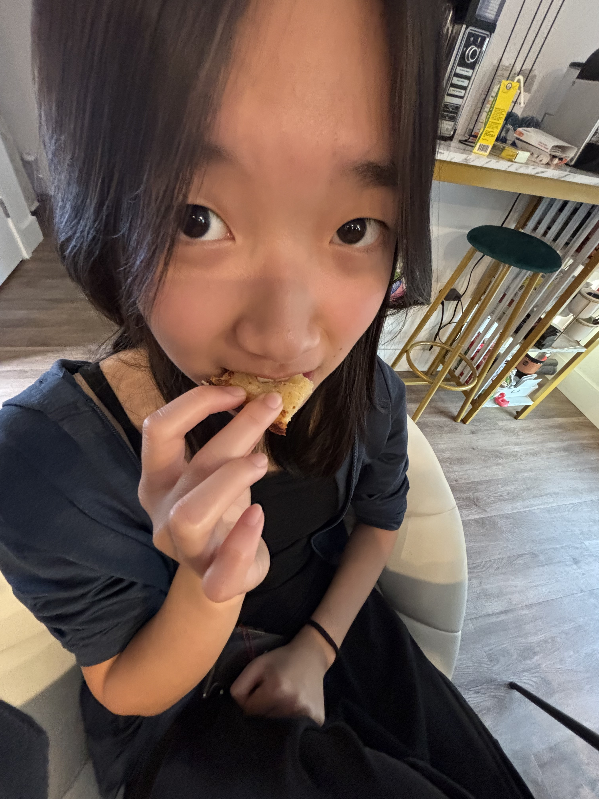

Samantha Young
Los Angeles Chapter Outreach Officer
Hello I'm Samantha Young, the Outreach Officer for our Los Angeles chapter. I'm the bridge between Hearts for Healing and the community we serve.
My role involves building partnerships with hospitals, schools, and community organizations. I've helped establish our chapter's presence at five new healthcare facilities this year alone.
With a background in communications, I ensure our message of healing and hope reaches those who need it most. I also lead our social media team, sharing inspiring stories from our work. In my free time, I enjoy photography and capturing the human stories behind our mission.